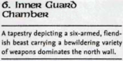

Week 7 - Second of three. Caverns and Caves, oh my!
Taking stock, the party decide to clean out the rest of the temple complex and find a place to rest. They reason that anyone left alive would have joined the fight, and a little bird tells them that the three sects of the Ebon Triad sometimes don't communicate with one another for days. Sparing a moment to loot the bodies and coup-de-gras the dozing tieflings on the balcony, they recover some cash, some shiny armour, some potions and - praise the gods - a wand of Cure Light Wounds


There's a door on the back wall of the viewing box. A short flight of stairs down, and there is a chapel with a couple of zombies which the party easily disposes of. Beyond this is a small complex - private chambers for the clerics and a guard chamber. The party loots the rooms (Pearl of Power 1 and some treasure) and in Theldrick's room finds a journal and a piece of parchment.
The journal is enlightening, the parchment less so as it is written in a cypher that none of the party can crack. At the moment. Keeping in mind Balabar Smenk's comments, however, the party work out that "The Facless One" lives in the maze, domain of The Shadow, and that "That addled beast - Grallak Kur" lives in the other complex, domain of The Keeper.
After resting, the part elect to tackle Grallak Kur and The Keeper.
Boy, did I screw up this week or what. The encounters all hinge on the grimlocks exploiting the difficult terrain, and I didn't apply the difficult terrain rules. Frankly - I was not 100%. Still, there's a bit more to go before they are through these caverns, so things are looking fun.
The path leads sharply down, deeper into the upper reaches of Khyber, the walls of the corridor roughly hewn but mainly natural. The Keeper's domain turns out to be a complex of caves. The party come to a chamber filled with cave formations, and inhabited by a couple of hidden Grimlock guards. These are quickly disposed of, and the party press on. Next is a chamber which, at the far end, opens into a great shaft leading down. There are Krenshar here, but they too are quickly disposed of. Down the side of the shaft are iron pegs, which lead down to the floor.
Tom makes use of his Ring of Feather Falling and floats to the bottom. The rest of the party begin to descend the rough ladder when - disaster! Concealed on a ledge opposite are a pair of Grimlock archers, who begin to pepper the party with arrow fire. Tom attempts to fling rocks at the archers, but lacks a line of sight from below the ledge that they are on. Jericho makes it down ok, the arrows bouce of Arn's armour, Frith is also fine. But Flash takes a couple of hits and falls to the bottom - killing him outright.
Now, Flash's player - Andrew - was out of town this week. So we rang him and let him know what had just happened to his character. We re-rolled the falling damage with him on the phone, but the result was even worse. In the end, we decided that we couldn't bring ourselves to kill Andrew's character while he was not at the table for us to watch his reaction.
But luckily, it is only a scratch. Still, Flash needs several minutes to recover from the shakes, so he plays no further part in the adventure this week.
At the base of the shaft, a passage leads on. At the end, another shaft leads up. Above them is a simple rope bridge leading, they deduce, to the archer ledge. . Before them is a rubble scree, an obvious way to climb to the bridge, but they elect not to chance it. While they are debating what to do, a wild female grimlock leaps onto them from above, but - you guessed it - they quickly dispose of her.
Eventually the party decide to toss a rope up and over the bridge, and then to hoist themselves up onto it by grabbing onto one end and having Tom pull the other. Tom can them climb the rope, I suppose, but with his ring faces no risk.
Gaahh! Gaahh! How the heck do I adjudicate that? Do everyone else's players do this kind of stuff?
At any rate, as it stands, the party is flinging ropes over bridges and preparing to dangle therefrom, and Flash has most likely recovered from his fit of the vapours after his NDE and is prepared once more to pull his weight. Meanwhile, the grimlocks have probably regrouped and the party essentially has no ranged weaponry at all apart from Flash's spells and a light crossbow. Someone's going to die next week for sure, dammit.